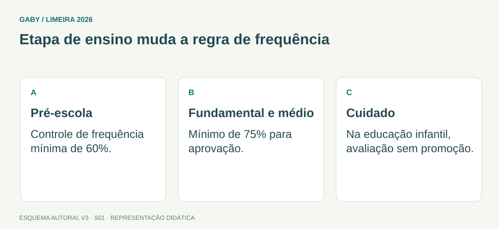

Objetivos do módulo
- Compreender a estrutura da LDB e seus princípios centrais.
- Relacionar dever do Estado, organização da educação e incumbências escolares.
- Dominar regras de educação básica, frequência, avaliação e documentação relevantes à secretaria.
- Reconhecer alterações atuais do texto legal e evitar estudar versões antigas.
Etapa de ensino muda a regra de frequência

Descrição em texto do esquema
- Pré-escola: Controle de frequência mínima de 60%.
- Fundamental e médio: Mínimo de 75% para aprovação.
- Cuidado: Na educação infantil, avaliação sem promoção.
Oficina visual · aplique o esquema
Uma questão usa a frequência mínima de 75% como regra para aprovação na pré-escola. Qual é o erro?
Atividade autoral complementar da V3. Registre sua resposta; a resolução está no arquivo de gabarito e revisão.
Mapa do conteúdo
1. Como estudar a LDB para a prova
A Lei nº 9.394/1996 estabelece as diretrizes e bases da educação nacional. Para Secretário de Escola, não basta decorar números de artigos: é preciso entender como a lei organiza a educação, distribui responsabilidades e estabelece regras que aparecem diretamente na rotina escolar.
A prova pode trocar sujeitos, idades, competências ou transformar uma faculdade em obrigação. Por isso, preste atenção a expressões como deverá, poderá, preferencialmente, obrigatória e gratuita.
2. Educação, princípios e dever de educar
A LDB define a educação como fenômeno amplo e disciplina especificamente a educação escolar. A educação escolar deve se vincular ao mundo do trabalho e à prática social.
Entre os princípios do ensino estão igualdade de condições de acesso e permanência, liberdade de aprender e ensinar, pluralismo de ideias e concepções pedagógicas, respeito à liberdade e apreço à tolerância, gratuidade do ensino público em estabelecimentos oficiais, valorização dos profissionais da educação, gestão democrática do ensino público, garantia de padrão de qualidade e aprendizagem ao longo da vida.
O dever do Estado inclui a garantia da educação básica obrigatória e gratuita dos 4 aos 17 anos. A matrícula das crianças na educação básica é dever dos pais ou responsáveis a partir dos 4 anos.
| Ponto | Regra de prova |
|---|---|
| Educação básica obrigatória e gratuita | Dos 4 aos 17 anos. |
| Matrícula pelos pais/responsáveis | A partir dos 4 anos. |
| Acesso à educação básica obrigatória | Direito público subjetivo. |
| Ensino noturno | Deve ser adequado às condições do educando. |
3. Organização dos sistemas e responsabilidades
União, Estados, Distrito Federal e Municípios organizam seus sistemas de ensino em regime de colaboração. A União exerce coordenação da política nacional, além de funções normativa, redistributiva e supletiva.
Os Municípios atuam prioritariamente na educação infantil e no ensino fundamental. As escolas, por sua vez, possuem incumbências próprias, como elaborar e executar sua proposta pedagógica, administrar pessoal e recursos materiais e financeiros, assegurar cumprimento dos dias letivos e horas-aula e articular-se com famílias e comunidade.
4. Educação básica, calendário, avaliação e frequência
A educação básica é formada por educação infantil, ensino fundamental e ensino médio. A LDB disciplina organização em séries, ciclos e outras formas, conforme interesse do processo de aprendizagem e normas do sistema.
A verificação do rendimento escolar deve observar avaliação contínua e cumulativa, prevalência dos aspectos qualitativos sobre os quantitativos e dos resultados ao longo do período sobre eventuais provas finais, além das possibilidades previstas em lei para recuperação e aproveitamento.
No ensino fundamental e médio, o controle de frequência fica a cargo da escola, conforme seu regimento e as normas do sistema, com frequência mínima de 75% do total de horas letivas para aprovação (art. 24, VI). Na pré-escola, o art. 31, IV, estabelece frequência mínima de 60% do total de horas; a avaliação na educação infantil não tem objetivo de promoção (art. 31, I).
| Tema | Não confunda |
|---|---|
| Avaliação | Não é apenas prova final; é contínua e cumulativa. |
| Frequência | É controlada pela escola. |
| Registro | Deve permitir comprovação da vida escolar. |
| Calendário | Pode adequar-se às peculiaridades locais sem reduzir carga prevista em lei. |
5. Secretaria escolar e rastreabilidade
A secretaria escolar transforma exigências legais em registros confiáveis: matrícula, frequência, resultados, histórico, transferências, atas e outros documentos. Esses registros precisam ser coerentes entre si e permitir reconstruir a trajetória escolar do aluno.
Um dado incorreto no cadastro inicial pode contaminar documentos posteriores. Por isso, conferência documental, atualização e correção formal são atividades de controle, e não simples burocracia.
Exemplos resolvidos passo a passo
Exemplo 1
Situação: Alternativa afirma: “A educação básica obrigatória e gratuita começa aos 6 anos.”
Exemplo 2
Situação: Uma escola decide considerar somente a prova final para aprovar o aluno.
Exemplo 3
Situação: Questão atribui ao Município atuação prioritária no ensino superior.
Pegadinhas e erros frequentes
- Estudar idade de matrícula em material desatualizado.
- Trocar dever do Estado por dever exclusivo da família, ou vice-versa.
- Confundir competência do ente federativo com incumbência da escola.
- Tratar avaliação como evento único.
- Transformar “preferencialmente” em “exclusivamente”.
Resumo de prova
- LDB = diretrizes e bases da educação nacional.
- Educação básica obrigatória e gratuita: 4 a 17 anos.
- Pais/responsáveis matriculam a partir dos 4 anos.
- Acesso à educação básica obrigatória é direito público subjetivo.
- Sistemas de ensino funcionam em regime de colaboração.
- Municípios: prioridade na educação infantil e ensino fundamental.
- Avaliação é contínua e cumulativa.
- Secretaria escolar precisa garantir registros coerentes e rastreáveis.
Exercícios do módulo
Resolva sem consultar o arquivo de gabarito. As questões são autorais e construídas para treinar os conceitos do edital.
- 7 aos 18 anos
- 0 aos 21 anos
- 4 aos 17 anos
- 6 aos 14 anos
Fonte: referência de estudo.
- 7 anos
- 4 anos
- 5 anos
- 6 anos
Fonte: referência de estudo.
- direito público subjetivo
- faculdade administrativa
- benefício condicionado a renda
- direito apenas dos brasileiros natos
Fonte: referência de estudo.
- apenas final
- somente quantitativa
- sem possibilidade de recuperação
- contínua e cumulativa
Fonte: referência de estudo.
- apenas no ensino médio
- somente na pós-graduação
- na educação infantil e no ensino fundamental
- no ensino superior
Fonte: referência de estudo.
- organizar sozinho todo o sistema nacional
- administrar pessoal e recursos materiais e financeiros
- editar a Constituição
- criar leis federais
Fonte: referência de estudo.
- ao mundo do trabalho e à prática social
- somente ao mercado financeiro
- apenas à família
- exclusivamente ao ensino superior
Fonte: referência de estudo.
- proibição absoluta
- obrigação sem exceção
- sinônimo de nunca
- preferência, não exclusividade
Fonte: referência de estudo.
- pelo cartório
- exclusivamente pelo Ministério da Educação
- pela escola, conforme regimento e normas do sistema
- somente pelo aluno
Fonte: referência de estudo.
- substituem todas as normas legais
- permitem comprovar a trajetória escolar
- servem apenas para decoração do arquivo
- dispensam conferência
Fonte: referência de estudo.
Quando terminar, abra Secretário de Escola 01 - LDB - Lei 9.394-1996 - Gabarito e Revisão.
Checklist de domínio
- ☐ Compreender a estrutura da LDB e seus princípios centrais.
- ☐ Relacionar dever do Estado, organização da educação e incumbências escolares.
- ☐ Dominar regras de educação básica, frequência, avaliação e documentação relevantes à secretaria.
- ☐ Reconhecer alterações atuais do texto legal e evitar estudar versões antigas.
Meta do módulo: 80% ou mais nas questões, sem depender de consulta.
Referências e conteúdos auxiliares
- Brasil — Lei 9.394/1996, LDB, texto compiladoOrganização da educação, incumbências escolares, avaliação, frequência e documentação.
- Brasil — Constituição Federal, texto compiladoLeia os dispositivos indicados no módulo e suas remissões no texto oficial.
Referências externas de apoio consultadas para a V3 em 27/09/2026. A origem das questões é o material autoral do projeto; estes links não indicam que uma instituição publicou ou validou os exercícios. As páginas externas precisam de internet. Em informática, confira a versão do programa; em legislação, observe o recorte e as regras de atualização do edital.